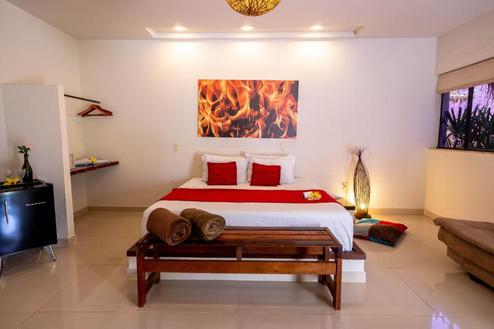

Nossa suíte mais pedida. Todas ficam no primeiro andar, com varanda e rede de frente para o mar. É daqui que se vê o primeiro nascer do sol das Américas.
Promoção de baixa temporada:
R$ 690 R$ 490 por noite.
Detalhes
- Área: 30 m2
- Capacidade: 2 adultos e 1 criança
- Camas: casal king e sofá-cama
- Varanda: rede e duas espreguiçadeiras
- Pet: não aceita
Nota dos hóspedes:
Quem ficou aqui
Deixamos a cortina aberta e acordamos com o céu laranja. Vale cada centavo.
Juliana e Pedro, Belo Horizonte (MG)
Perguntas frequentes
A que horas o sol nasce?
Entre 5h e 5h30 na maior parte do ano. Deixamos um despertador na suíte, se quiser.
Todas as suítes têm a mesma vista?
Sim. As 6 Suítes Vista Mar ficam de frente para o oceano.